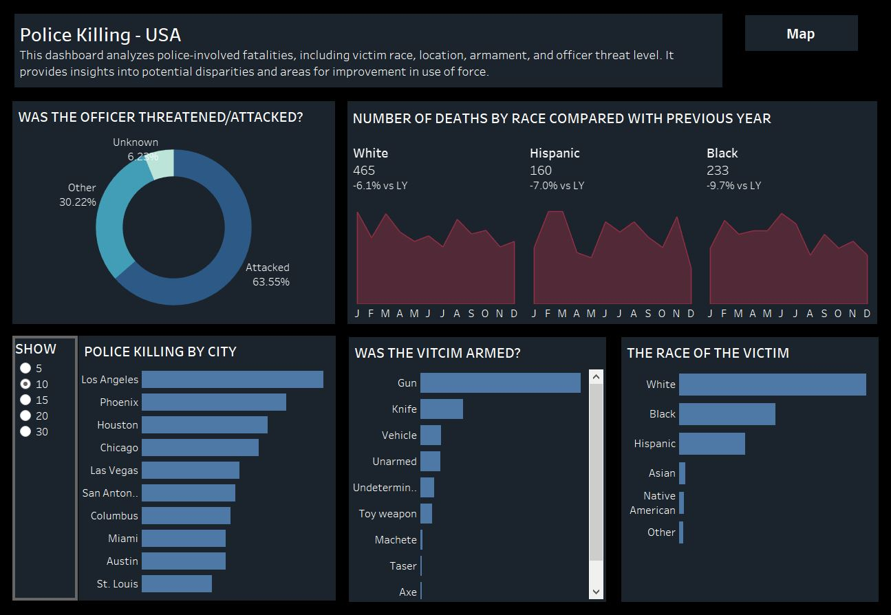

During this project was developed three machine learning and data mining methods to solve the problem of classifying
the polarity of tweets (binary classes) using the Sentiment140 dataset.
This work explores the use of the logistic regression classifier model and two neural networks,
Long Short-Term Memory (LSTM) and Convolutional Neural Networks (CNN).
Metrics build for different loan departments in SQL server.

Multiple visualisations developed in Tableau

The purpose of this project is to build the best suited classifier model to classify 10 categories of grayscale fashion images: top, trouser, pullover, dress, coat, sandal, shirt, sneaker, bag and boot.

Sentiment analysis involves identifying the attitude or opinion expressed in a piece of text, such as a document or speech. It has practical uses in areas like marketing, where customer feedback in the form of comments, reviews, and messages can be analyzed to improve business strategies.